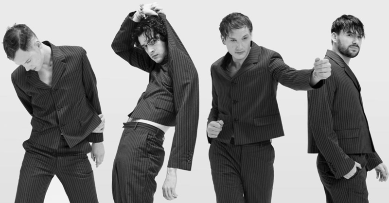

STORY
MEMBERS
VIDEO
ALBUM
STORY

영국 노섬벌랜드에서 태어나 뉴캐슬과 체셔 맥클스필드에서 자란 매튜 힐리는 윔 슬로우 고등학교에서 로스 맥도널드, 아담 한, 조지 다니엘을 만난다. 시 의회에서 노년층과 청소년들의 화합을 위한 밴드 경연을 열기 시작했는데 아담 한이 여자 친구를 통해 매튜 힐리에게 "이 연주회에서 공연을 하고 싶다."라고 말했고 이후 커버곡들을 연주해왔으나 아담 한이 곡을 써왔다고 한다.아담 한이 밴드 멤버를 모집하기 시작했고, 매튜 힐리는 원래 드러머였지만 밴드의 보컬이 새 밴드를 만들기 위해 떠나 힐리가 보컬을 맡게 되었고 조지 다니엘을 영입하며 지금의 The 1975가 되었다.
APPLE MUSIC
YOUTUBE
TWITTER
INSTAGRAM